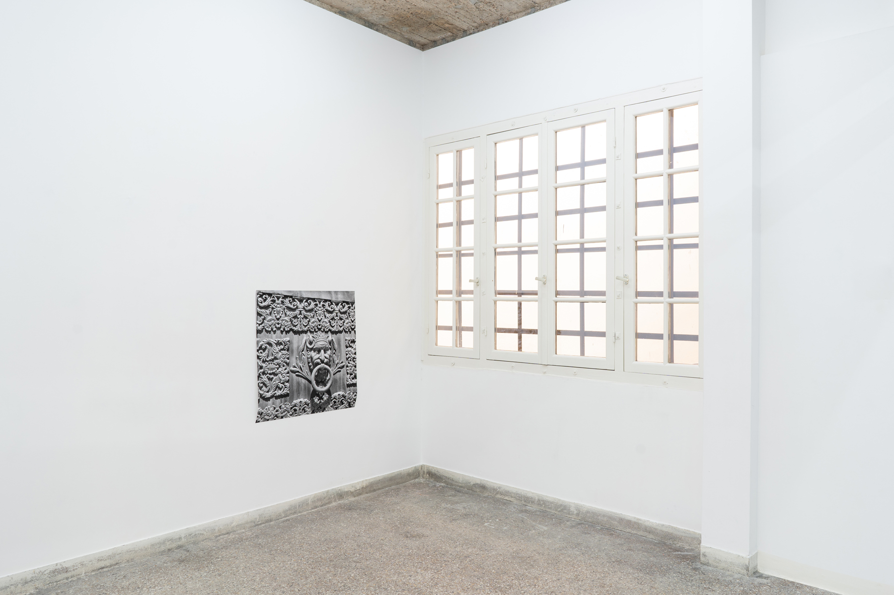
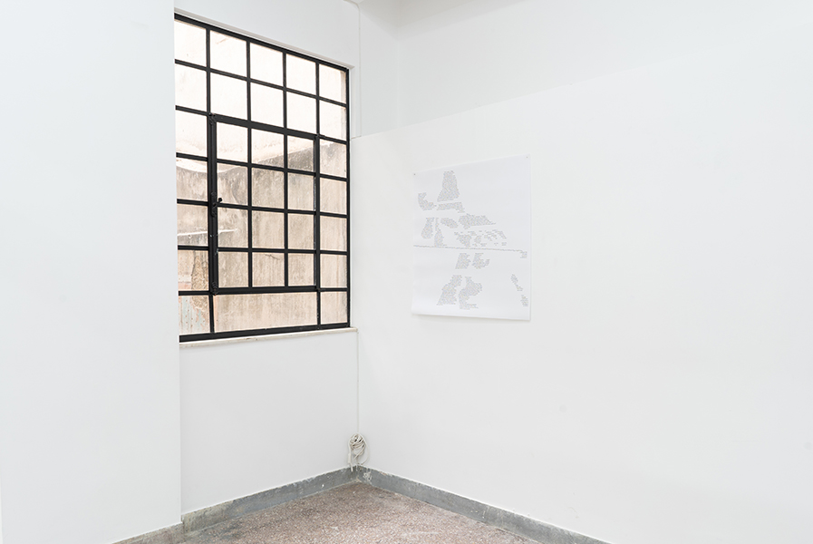
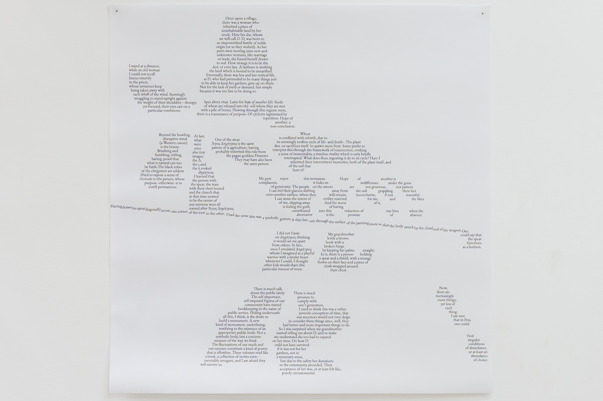
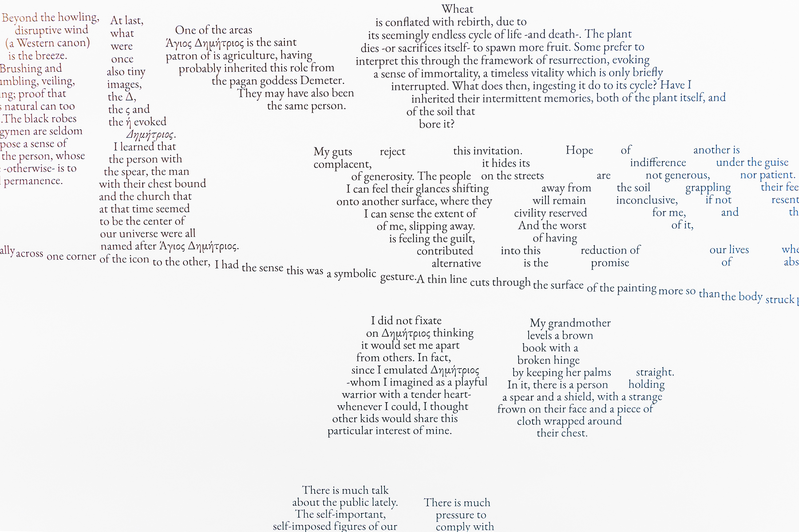

2021, inkjet prints on paper, variable sizes
photo credit: Alexandra Masmanidi
Dimitri’s Binder is a short story that unfolds in the form of a map, featuring Agios Dimitrios [Saint Demetrius], the goddess Demeter, and a woman named Elenitsa. It is set in the neighborhood of Tatavla, and explores its changing landscape through the 19th and 20th centuries. Both literally—due the destruction of its particular agriculture, architecture, and landmarks—and ephemerally—as it has been rendered uninhabitable for the languages, rituals, and histories of its communities.